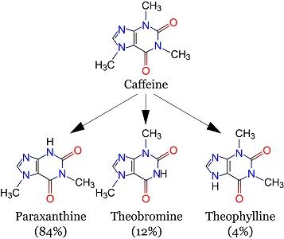

咖啡因(Caffeine, CFI) 是咖啡的主要活性成分、食品药品添加剂，属于兴奋剂。
化学上是黄嘌呤类物质，纯咖啡因是苦味、白色、无臭粉末，熔点为235 ~ 238°C，遇水发热。咖啡因在室温下适度溶于水（2g/100mL），但极易溶于沸水（66g/100mL）[1]
于世界上，咖啡因是使用最广泛的合法精神活性物质
（图片引用自）[5]

如图所示，咖啡因在体内主要代谢为三种产物，并代谢广泛。从左到右分别是，副黄嘌呤(84%)、可可碱(12%)、茶碱(4%)，每个都有不一样的作用。
咖啡因摄入后，在45分钟内被小肠吸收，并分布在所有身体组织中。最大浓度和吸收总量均为口服量的约30%。1~2小时内，血药浓度达到峰值。
咖啡因的消除半衰期极大决定于服药者的状态：
咖啡因的耐药性增长极为夸张迅速。作为存疑的数据，停药后，耐受性会在7~14天内恢复到基线[7]，但在实际体验中来看，至少需要一个月
你喜欢哪个咖啡厅咖啡馆？嗯
咖啡因耐力片或20%粉也行。20%粉所附赠的药勺的规格是1g/每勺
轻-起效剂量：10mg
轻-正常剂量：20mg~50mg
中-正常剂量：50mg~200mg
重-正常剂量：200mg~500mg
重-中毒剂量：500mg以上，确信在3500mg
起效时：5min~10min
来效时：10min~1h
顶峰时：1~2h
退效时：6h~10h
残效时：24h
总效时：2h~5h
需注意，体重不同剂量不同，上述剂量是针对60kg的人的。你的体重除以60，再乘以上述之中的剂量，即为适应你的剂量。
据观测，在至少空出两顿后服用咖啡因，等到药效退去后便会非常疲困。这不仅可以被利用于一种邪门的安眠手段，还说明一个事实：服用咖啡因需要使用食物
倘若需要产生困意之时，脑脊液中的腺苷就会与腺苷受体结合，进而产生困意。如果拮抗腺苷受体，让受体和腺苷无法结合，那就不会产生困意了。咖啡因拮抗腺苷受体，便可抗困意
咖啡因引起的躁狂，来源于腺苷受体拮抗引发的单胺水平提高
咖啡因引起的心悸，来源于腺苷A1受体阻断
咖啡因引起的兴奋，主要来源于正肾素释放促进
咖啡因引起的体力提升，主要来源于肾上腺素释放促进
咖啡因具有良好的利尿作用
含有咖啡因的饮料与右美沙芬搭配时，将强化右美沙芬的兴奋作用，抑制右美沙芬的解离与抑制作用
咖啡因与茶氨酸搭配，可以减少双方的不良反应，并增强双方的药效
在使用咖啡因20%粉时，将咖啡因粉溶进水里成溶液……
截至2007年，尚无已知的咖啡因中毒解毒剂或逆转剂[10]
尽管社会风流认为咖啡因会导致成瘾，但这种成瘾性较弱，也并不是有必要地依赖——那就不是依赖性。因此，除了纯粉或过量到每日1g滥用，并不用担心咖啡因的成瘾性
咖啡因的戒断症状包括头痛、烦躁、注意力不集中、困倦、失眠、胃部和上半身和关节疼痛 [11]
戒断症状可能会在停药后12 ~ 24小时内出现，大约在48小时内达到高峰。[12] 低程度下不会超过一天 [13] ，高程度下通常会持续2至9天。[14]
对于平均每天摄入235毫克咖啡因的人，有52%在停止摄入咖啡因两天后，会出现戒断性头痛。长期饮用咖啡因的人，也会出现抑郁和焦虑加剧、恶心、呕吐、身体疼痛、咖啡因渴望等症状。[15]
{kind=link}